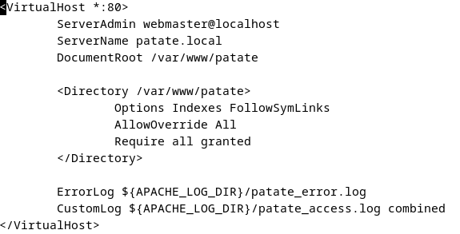
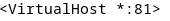
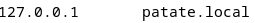

1ère étape : installation du serveur Apache :
On commence par installer le service Apache (on le fait avec Apache2) avec la commande :
apt install apache2
Ensuite, pour activer le service, on tape la commande :
systemctl start apache2
Et, pour que le service soit actif au démarrage, on tape :
systemctl enable apache2
On vérifie si le service est bien actif avec :
systemctl status apache2
2ème étape : hébergement du site sur le serveur
Tout d'abord, on crée un nouveau dossier qui va contenir tous les fichiers nécessaires pour notre site. Pour cela, on tape la commande :
mkdir -p /var/www/patate
Apache utilise des Virtual Hosts pour héberger des sites web, on crée donc un fichier de configuration avec la commande :
touch /etc/apache2/sites-available/patate.conf
On modifie ensuite ce fichier (il faut tout ajouter).
Ensuite, on active le site avec la commande :
a2ensite patate.conf
Puis on recharge Apache avec la commande :
systemctl reload apache2
Si cela ne fonctionne pas, modifier le port du fichier /etc/apache2/sites-available/000-default.conf qui peut entrer en conflit.
Ensuite, on ajoute un nom de domaine local dans le fichier /etc/hosts, on ajoute la ligne suivante :
3ème étape : activation du PHP
On vérifie si le PHP est installé avec la commande :
php -v
Si elle ne fonctionne pas, on l’installe avec la commande :
apt install php libapache2-mod-php
On redémarre Apache pour activer le PHP avec la commande :
systemctl restart apache2
Puis :
a2enmod php8.2 (si PHP n’est pas activé)
Puis :
systemctl restart apache2
4ème étape : configuration base MySQL
On commence par installer le paquet wget avec la commande :
apt install wget